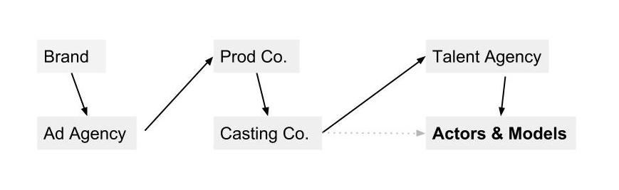
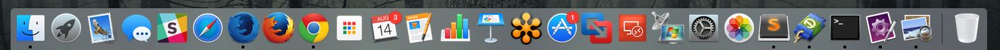
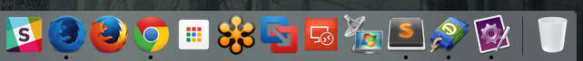
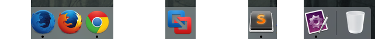

Agenda
- Introduce the topic
- Introduce myself and my native desktop product
- Get to know each other
- Break into small groups and list benefits of specific desktop apps
- Compile list of benefits and looks for commonalities
I help
people*
get jobs.
* in the entertainment industry

FastCapture
Native application for capturing, editing, and encoding audition videos.
What's in your Dock or Start menu?



Do you have a native desktop app in your product portfolio?
Do you have a native desktop app in your roadmap?
Which OS do you primarily use?
Assignment
- Value proposition
- Platforms
- Justification vs Mobile/Web
- Critique
- Recommendation